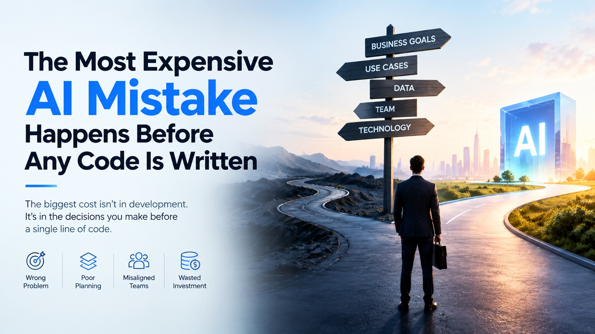

The Most Expensive AI Mistake Happens Before Any Code Is Written
The invoice for a failed AI project arrives during development, but the cause is usually decided months earlier, in a meeting where nobody asked whether the idea was worth building. AI Opportunity Discovery Services exist to close that gap, by testing ideas against business reality before any budget is spent on engineering.

The Bill Arrives Late
When an AI project disappoints, attention turns to the model, the vendor or the developers. Yet the same pattern appears again and again: the team built something that worked technically but solved a problem nobody urgently had. Rewriting code is cheap compared with rebuilding a project around the right question after months of effort.
That is why the early stage deserves more scrutiny than it usually gets. The decisions made before a single line of code is written set the ceiling on what the project can ever deliver.
Four Early Mistakes That Cost the Most
1. Choosing the wrong problem
Teams often pick whatever is easiest to demonstrate rather than whatever matters most to the business. A clever demo can hide the fact that the problem it solves is small, rare or already handled well enough.
2. Planning too little
Skipping the groundwork on data access, system connections and rollout turns small surprises into large delays. A plan does not have to be long, but it has to exist before the build starts.
3. Leaving teams misaligned
Technical staff, operations and leadership frequently carry different pictures of what success means. When these views are never reconciled, the finished product satisfies nobody completely.
4. Funding before validating
Committing a full budget to an unproven idea turns every wrong assumption into wasted investment. Small, early tests are far less costly than large, late corrections.
Five Signposts to Read Before You Build
A useful way to review any AI idea is to walk through five signposts in order. Each one narrows the path, and skipping any of them is where most avoidable waste begins.
- Business goals Which outcome should improve, and who will notice?
- Use cases Which specific task or decision will AI change?
- Data Is the information needed available, accurate and permitted for this use?
- Team Who will build it, run it and answer for the results?
- Technology Only now: which tools and approach fit the answers above?
Notice that technology comes last. When it comes first, the project tends to bend the problem to fit the tool instead of the other way around.
A Short Pre-Build Checklist
- The problem is written in one clear sentence.
- A baseline number exists, so improvement can be measured.
- The data has been inspected, not just assumed to be usable.
- One business owner has agreed to be accountable.
- The first release is small enough to judge within weeks.
- There is a stated condition under which the project will be stopped.
Spend Thinking Before You Spend Budget
Good AI programs are not the ones that move fastest into development. They are the ones that spend a little time up front deciding what deserves to be built, in what order, and how success will be judged. That discipline costs far less than any rebuild, and it gives leaders a firm basis for saying yes, or an early and inexpensive no.
Want to find the AI opportunities worth pursuing in your business?
Get More Information